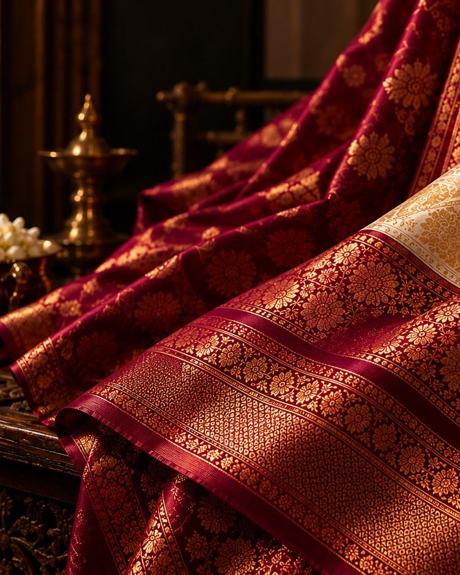
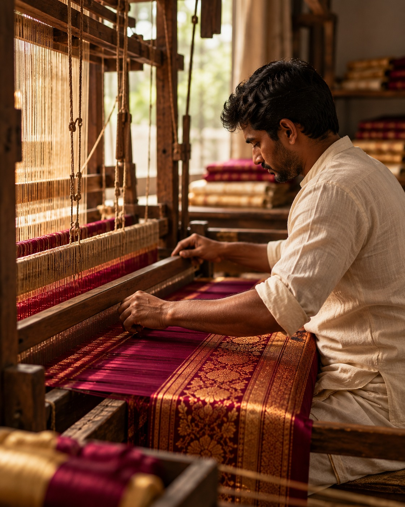

01
Handwoven Silk
Fine silk woven by skilled artisans using traditional techniques and contemporary sensibility.
↗
Contemporary silk craftsmanship shaped by generations of tradition, precision, and quiet artistry.
Explore the collection ↗
Every piece begins with carefully selected silk, skilled hands, and a process refined through generations of craftsmanship.
Fine silk woven by skilled artisans using traditional techniques and contemporary sensibility.
Bespoke fabrics developed around your desired colour, texture, pattern, and finish.
Traditional Indian weaving practices preserved through contemporary design and meticulous craftsmanship.

Our story is rooted in the belief that true craftsmanship cannot be rushed.
From the selection of the finest silk threads to the final weave, every stage is shaped by skilled hands and generations of knowledge.
A selection of woven pieces where traditional craftsmanship meets contemporary expression.
We begin with carefully selected silk threads, chosen for their texture, strength, colour, and natural character.
Skilled artisans transform individual threads into fabric through techniques refined over generations.
Each piece is carefully inspected, finished, and refined until the texture and character meet our standards.
The finished textile leaves the workshop ready to become part of something made to last.
Have a project, collection, or idea in mind? We'd love to hear about it.
Start a conversation